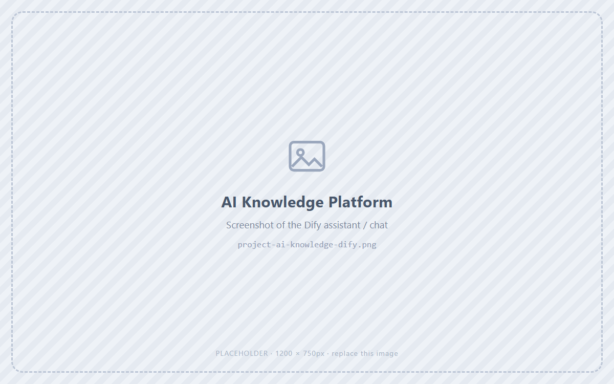

Connect the assistant to the enterprise
The Enterprise AI Assistant & MCP Gateway brings multiple application capabilities into the App Center assistant experience. Its purpose is cross-application integration: reporting, data access, and business workflows become available through a common MCP connection path.
The KIN Chatbot Assistant is the customized Dify workflow that interacts with employees and invokes those capabilities. The gateway is the shared connection layer behind that workflow. Together they form one connected solution with distinct responsibilities.
Connect systems without flattening their access rules
Enterprise information is distributed across reporting, data storage, and business applications. A request may need capabilities from several services, but the employee should not have to configure a separate MCP client for each one.
The integration must also preserve existing access. Connecting a service to the assistant should make an authorized workflow easier to reach, while the employee remains limited to the capabilities available to them in the underlying applications.
Key features
- Shared MCP connection layer
A gateway connects the assistant workflow to multiple MCP services instead of requiring employees to maintain individual tool connections.
- Reporting, data, and application capabilities
Connected services include Metabase MCP, Data Storage MCP, and application-specific MCP services such as iHelp Workspace.
- Cross-application workflows
The chatbot can use relevant connected capabilities within one conversational workflow. A request can span services when needed rather than ending at a single application boundary.
- Employee permission alignment
The assistant’s access stays aligned with what the employee is permitted to do manually. Service connectivity and authority to use a particular capability remain different concerns.
- A common App Center experience
Employees use the App Center conversation. The custom Dify workflow handles context and orchestration, and the gateway provides the MCP integration path behind it.
One request, multiple possible sources
The assistant selects the relevant capabilities for the employee’s request. The gateway connects the MCP services, and their returned information becomes context for the next part of the conversation.
Access follows the employee’s permissions. The gateway connects capabilities; it does not turn a successful chat login into unrestricted reporting, database, or application access. Services shown are connected options, not a mandatory sequence.
For example, a workflow may need reporting context and related information from a business application. The specific tools and operations depend on the request and permission scope; the diagram shows connected options rather than an automatic call to every system.
My contribution
I implemented the shared MCP gateway integration behind Application Center, connecting reporting, data storage, and application-specific MCP services to the customized assistant workflow.
The work connects tool capabilities into a common path while keeping their different responsibilities visible: the chatbot coordinates the conversation and tool selection, the gateway connects MCP services, and the applications retain their own access boundaries.
Separate conversation orchestration from service connectivity
Two case studies, one connected solution. The chatbot case study explains employee-facing behavior and orchestration. The enterprise assistant and gateway case study explains the broader cross-application integration.
Dify provides the customized chatbot workflow. MCP provides the interface to connected tool capabilities. The gateway brings those MCP services into a common integration path, while direct API calls remain part of the chatbot’s broader orchestration where used.
Identity and credential context support the interaction, but this diagram does not prescribe where every permission check is implemented. The intended behavior is parity with the employee’s existing application access, rather than unrestricted cross-system authority.
Outcomes & engineering lessons
The combined solution gives employees a common conversational entry point to connected enterprise capabilities. The gateway broadens the assistant beyond a single data source, while the custom workflow makes those capabilities useful within the employee’s conversation.
The central lesson is to give each layer a clear purpose. Conversation and memory belong to the assistant workflow; MCP connectivity belongs to the integration layer; business rules and record access remain grounded in the connected applications.